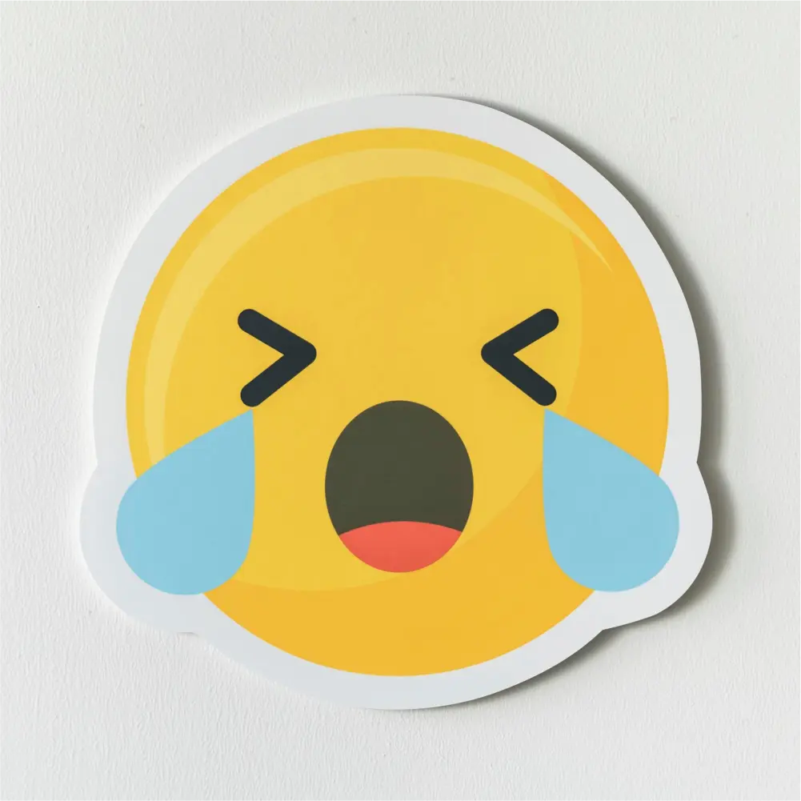
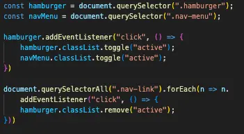
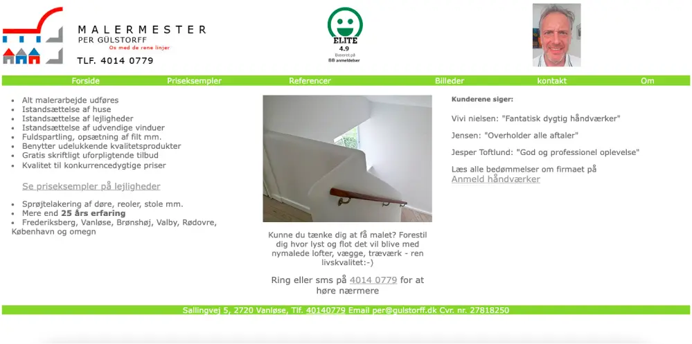

Scroll ned for at læse om mine temaopgaver!
Tema 1 - Introuge
Vores første tema var introuge. Vi lærte, hvad det indebærer at være Multimediedesigner. Vi fik introduceret VS Code, Adobes Creative Cloud pakke og bestilte vores eget domæne. Vi lavede præsentationskort i Figma for at lære hinanden at kende i klassen, og så blev vi tildelt grupper hvor vi skulle lave en kort introfilm med et tema. Pigerne i gruppen blev enige om et Barbie tema, og vores video vandt en præmie for bedste idé. Videoen kan muligvis ikke vises på min side fordi den er privat, men hvis ikke kan i klikke nedenunder for at gå ind og se den på YouTube.
Tema 2 - Grundlæggende web
I Tema 2 skulle vi kode vores første hjemmeside. Vi fik en introduktion til grundlæggende webudvikling og design, og vi fik introduceret de grundlæggende værktøjer vi kommer til at bruge på Multimediedesign, herunder digitale brugergrænseflader og responsivt webdesign. Vi fik intro til HTML og CSS, og lærte at bruge dem i praksis. Derudover fik vi også introduceret Figma, Photoshop og Adobe XD.
Indenfor design arbejdede vi med designkonventioner, moodboards og style tiles, som er brugbare redskaber til at komme igang med at designe og udvikle brugergrænseflader. De bruges også til at skabe wireframes i lo- og hi-fi prototyper. Derudover lærte vi også om farver, typografi, tekstopsætning, gestaltprincipper og ophavs- og licensrettigheder ved brug af billeder fra nettet.
Indenfor kodning fik vi introduktion til Visual Studo Code, som er vores ‘arbejdsplads’ indenfor kodning, hvordan vi får uploadet til vores egen hjemmeside med FileZilla, arbejdet med responsivt design, så vores hjemmesider fremadrettet kommer til at fungere og se godt ud på mobil såvel som på desktop, ved brug af media queries. Også hvordan vi får valideret vores HTML og CSS, så hjemmesiderne fremstår uden kodefejl. Vi arbejde også med CSS grid og flexbox, semantisk markup af billeder og tekst, og mappestruktur, så vi kan finde rundt i vores projekter, og hvordan vi inspicerer hjemmesider ved brug af Developer Tools.
Den mundede ud i en aflevering af Studiestartsprøven. Jeg udviklede både et site til desktop og et site i mobilformat:
Klik nedenunder for at se enten versionen til desktop eller mobile!Tema 3 - Grundlæggende UX/UI
I Tema 3 fik vi til opgave at udvikle et emnesite efter eget valg. Min første idé var, at lave en hjælpeside til folk med spilleproblemer, hvor de kunne blive henvist til professionel hjælp. Jeg indså dog kort efter at jeg var gået igang med mit design, at jeg vil have svært ved at få nok indhold på siden til at møde de krav, vi havde. Jeg bestemte mig derfor for at lave en informationsside om de mest spillede casinospil, nemlig poker, blackjack og roulette.
Jeg startede med at udarbejdede moodboard og style tile, for at skabe et tema og kontinuitet på mit site. Jeg valgte en moderne stil, da det var det, der fangede mig mest, og det passede også godt til casinobranchen, da det er en platform der virkelig har spredt sig, efter at onlinecasinoer er blevet så populære, som de er. Jeg fik brugt mit style tile en hel del til at forsikre mig, at jeg havde en gennemgående stil og tema på mit site.
Moodboard og style tile
Wireframes
Derefter lavede jeg lo-fi wireframes, for at få en idé om min sides interface. Så gik jeg i gang med hi-fi prototyperne, og prøvede dem også som prototyper i Figma, for fx. at teste at man kan navigere rundt på siden efter hensigt
Kodning
At få kodet mit design, som jeg lavede i Figma, viste at være sværere end jeg lige troede. Set i bakspejlet, skulle jeg have have haft kodningen mere i baghovedet da jeg udarbejdede mit design, og tænkt over, hvordan jeg kunne have gjort det mere overskueligt for mig selv at kode. Jeg havde klart sat standarded for højt designmæssigt i forhold til mine kodeevner, og mit site endte ikke med at se præcis ud som mine hi-fi prototyper. Jeg fik dog lært en hel masse CSS, da min side krævede en del styling. Jeg løb ind i en masse udfordringer, som jeg løste ved at prøve mig frem og med hjælp fra studiekammerater. Det var her i Tema 3, hvor jeg for alvor synes, at jeg begyndte at forstå kodning rigtigt. Men trods alt, er jeg tilfreds med resultatet.
Klik på knappen nedenunder for at se min casinoside!Tema 4 - Grundlæggende animation
I Tema 4 var jeg syg, så jeg har ikke udviklet et spil :-(
Jeg har dog sat mig ind i JavaScript, da jeg har brugt det til at lave min burgermenu! Tjek det her script ud:
Tema 5 - Grundlæggende indhold
I Tema 5 skulle vi rebrande en virksomheds hjemmeside. Vi valgte i vores gruppe Nikolajs fars malerfirma.
Tema 5 forløb sig over 4 uger. Vi lærte først om videoproduktion, hvor vi skulle lave en klippeøvelse og et videosite, for at få en introduktion til videoredigering og filmning. Vi lærte om de forskellige filmformater, såsom .webP, .wav og .mp4. Vi var også nede og besøge Tech & Story Lab, hvor de viste os det udstyr vi kunne låne til at filme og optage
Vi skulle så derefter udarbejde vores virksomhedssite - vi startede med at få aftalt tidspunkter med Per, Nikolajs far, hvor vi kunne filme b-rolls og en videotimeline, som skulle køre på forsiden på Pers nye hjemmeside. Derudover skulle vi også lave et interview med Per.
Efter filmeprocessen gik vi igang med kodning af Pers nye hjemmeside - vi startede ligesom i Tema 3 med at udarbejde moodboard, style tile og wireframes, for at få en idé om designet. Vi dragede inspiration fra andre malerfirmaers hjemmesider, og det gav et godt udgangspunkt..
Sådan her ser Pers forside ud på hans hjemmeside: En gammeldags hjemmeside, som kunne trænge til en modernisering. Vi ville bruge nogle af de klip vi havde skudt til at lave en baggrundsvideo, der skulle køre på siden. Vi ville også køre et blåt tema, da vi efter research fandt ud af, at de fleste malerfirmaers hjemmmesider vi besøgte, var blå - og så synes vi også at blå havde en god sammenkobling til malerfaget.
To billeder fra siden, men jeg vil anbefale at gå ind på siden selv, da man får det fulde indtryk med baggrundsvideoen!
Tema 6 - Portfolio
Tema 6 er udarbejdelsen af denne portfolio!